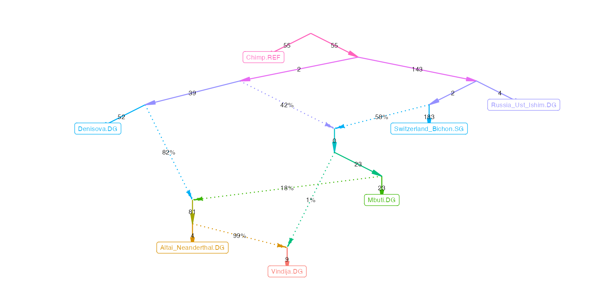

Under construction
Admixture graphs are models of the demographic history of a set of individuals or populations. Genetic data, in particular f-statistics, are informative about the topology (the shape) and the parameters (drift and admixture weights) of a graph, which allows us to favor some models and to reject others.
ADMIXTOOLS 2 makes it easy to work with admixture graphs. It allows you to read and write them in a number of different formats, create them from scratch, and modify them in a number of ways.
qpgraph() evaluates a single graph by finding the best combination of weights for a specific topology. find_graphs() tries to find the best fitting graph topologies for a set of f-statistics.
In addition to that there are a number of functions for exploring the topological neighborhood of a graph, to test whether the fits of two graphs are significantly different from one another, and to simulate data under any admixture graph.
Graphs and f-statistics
This section is about the relation between admixture graphs and f-statistics and assumes that you are familiar with f-statistics.
Graphs and f2
Admixture graphs tell us how the genetic drift that separates two populations (\(f_2\)) can be decomposed into segments that are unique to single populations, and segments that are shared between multiple populations.
In the graph below, the path between \(C\) and \(D\) is composed of only two segments (one unique to \(C\) and one unique to \(D\)), while the path between \(B\) and \(D\) is composed of three segments, and the middle segment (\(n1|n2\)) is shared with other population pairs, for example with \(B\) to \(C\).
g = matrix(c('R', 'R', 'n1', 'n1', 'n2', 'n2',
'A', 'n1', 'B', 'n2', 'C', 'D'), , 2) %>%
edges_to_igraph()
g %>% plotly_graphThe distance between \(B\) and \(D\) can be expressed in the following equations:
\[f_2(B, D) = f_2(n1,B) + f_2(n1,n2) + f_2(n2,D)\] or in short
\[f_2(B, D) = n1|B + n1|n2 + n2|D\]
(\(x|y\) is the edge going from \(x\) to \(y\))
It’s a special property of \(f_2\)-statistics that allows us to break them down into these components. \(F_{ST}\) for example is not additive like that, so generally \(F_{ST}(C, D) \neq F_{ST}(n1,B) + F_{ST}(n1,n2) + F_{ST}(n2,D)\).
There are \(\frac{k(k-1)}{2}\) equations for the \(f_2\)-statistics of all population pairs (\(k\) is the number of populations):
graph_equations(g, substitute = FALSE)$equations## # A tibble: 6 x 3
## pop1 pop2 equation
## <chr> <chr> <chr>
## 1 A B (`R|A` + `R|n1` + `n1|B`)
## 2 A C (`R|A` + `R|n1` + `n1|n2` + `n2|C`)
## 3 A D (`R|A` + `R|n1` + `n1|n2` + `n2|D`)
## 4 B C (`n1|B` + `n1|n2` + `n2|C`)
## 5 B D (`n1|B` + `n1|n2` + `n2|D`)
## 6 C D (`n2|C` + `n2|D`)These equations tell us that the expected \(f_2\)-statistics for each pair is the sum of all edges that separate these two populations. In graphs with admixture, some population pairs will be connected through two or more paths. For those population pairs the expected \(f_2\) will be a weighted sum of all paths connecting the two populations, with the weights given by the relative ancestry proportions.
Here is a simple graph with one admixture event:
g = matrix(c('R', 'O', 'R', 'n1', 'n1', 'n2', 'n1', 'n3', 'n2',
'B', 'n2', 'n4', 'n3', 'a', 'n3', 'C', 'n4', 'a',
'n4', 'D', 'a', 'A'), , 2, byrow = T) %>% edges_to_igraph()
g %>% plotly_graphTo go from \(A\) to \(C\), there are now two paths: A short path through the right admixture edge, and a long path through the left admixture edges. \(f_2(A, C)\) is a weighted sum of these two paths:
graph_equations(g, substitute = FALSE)$equations %>%
filter(pop1 == 'A', pop2 == 'C') %>% pull(equation)## [1] "`a` * (`n1|n2` + `n2|n4` + `a|A` + `n1|n3` + `n3|C`) + (1 - `a`) * (`a|A` + `n3|C`)"\(a\) is the proportion of admixture coming through the left admixture edge, and \(1-a\) is the proportion coming from the right.
Graphs and f4
\(f_2\) can be seen as the basic building block of other f-statistics, buy many are more familiar with \(f_4\) and D-statistics.
To see how \(f_4\)- or D-statistics relate to admixture graphs, let’s assume we have four populations, and we observe these \(f_4\)-statistics:
\[f_4(A,B; C,D) = 0\] \[f_4(A,C; B,D) = 0.1\]
\(f_4(A,B; C,D) = 0\) suggests that \(A\) and \(B\) form a clade relative to \(C\) and \(D\), and a significantly positive value for \(f_4(A,C; B,D)\) suggests that there is some amount of genetic drift shared between \(A\) and \(B\) that is not shared by \(C\) and \(D\) (If \(f_4(A,C; B,D)\) were also zero, it would suggest a star phylogeny). The admixture graph connecting the four populations could therefore look like this:
g = matrix(c('R', 'n1', 'R', 'n2', 'n1', 'A',
'n1', 'B', 'n2', 'C', 'n2', 'D'), , 2, byrow = T) %>%
edges_to_igraph()
g %>% plotly_graphThe distance between the internal nodes \(n1\) and \(n2\) is given by \(f_4(A,C; B,D) = 0.1\).
An equally plausible admixture graph for this scenario is one in which \(A\) and \(B\) are not a clade in the strict sense, but in the sense that there is no overlap between the path from \(A\) and \(B\) and the path from \(C\) and \(D\).
g = matrix(c('R', 'R', 'n1', 'n1', 'n2', 'n2',
'A', 'n1', 'B', 'n2', 'C', 'D'), , 2) %>%
edges_to_igraph()
g %>% plotly_graphThis example demonstrates that
- f-statistics can be used to find plausible admixture graphs
- multiple different admixture graphs can fit the data equally well
- both the topology, and the parameters of an admixture graph can be estimated with f-statistics
The example also shows that f-statistics cannot tell us where the root of a graph should be. For that it helps to include an outgroup in the graph so we know that the root is at the correct position.
f4 ratio test
The \(f_4\)-ratio test can be used to estimate admixture weights (\(a\) and \(1-a\)) for one admixed population using two \(f_4\)-statistics from five populations, assuming that the populations are related as above. As the name suggests, it estimates an admixture weight \(a\) as the ratio of two \(f_4\)-statistics, in this case \(a = \frac{f_4(B,O;A,C)}{f_4(B,O;D,C)}\). Thinking through why this works can help understand how qpGraph turns \(f\)-statistics into estimates of drift length and admixture weights.
First, \(f_4(B,O;D,C)\) is exactly equal to the distance between \(n1\) and \(n2\), the left blue edge. That’s because \(O\) and \(C\) form a clade relative to \(B\) and \(D\), and this edge is the only connection between the two clades. (They are not clades in the usual sense of the word, but in the sense that there is no overlap between the paths from \(O\) to \(C\) and the paths from \(B\) to \(D\).) At the same time, \(f_4(B,O;A,C)\) is the intersection of paths going from \(O\) to \(C\), and from \(B\) to \(A\). Now there are two paths going from \(B\) to \(A\): A short one through the left, and a long one through the right admixture edge. Along the short path going to \(A\) from the left, there is no intersection with the path from \(O\) to \(C\), so the component of \(f_4(B,O;A,C)\) going through that path is zero. This means that if \(f_4(B,O;A,C)\) is not equal to zero, it is only due to the long path from \(B\) to \(A\). Along that path, the intersection with \(O\) to \(C\) is exactly the left blue edge again. We now have two expressions for the length of that left blue edge: The first expression is \(f_4(O,B;C,D)\), and the second expression is \(a \times f_4(O,B;C,A)\). This allows us to estimate \(a\) as \(\frac{f_4(O,B;C,A)}{f_4(O,B;C,D)}\).
For more complex graphs, drift lengths and admixture weights can be estimated in just the same way, although it is not always possible to express each estimated parameter as a simple ratio of two f-statistics. However, even without such simple expression, it is usually possible estimate graph parameters by numerically finding solutions to the system of graph equations. qpgraph() is doing just that: It finds the drift and admixture weights for a given graph which minimize the squared difference between the observed and the expected f-statistics.
Graph as a function
An admixture graph can be seen as a function which maps drift and admixture weights to f-statistics, using the equations that describe the graph topology. We can create this function for any graph, and use this function to see how changing specific edge weights changes f-statistics.
g_to_f2 = graph_f2_function(g, admix_default = 0.5, drift_default = 0.1)
g_to_f2(`a|A` = 0) %>% head## # A tibble: 6 x 3
## pop1 pop2 f2
## <chr> <chr> <dbl>
## 1 A B 0.25
## 2 A C 0.25
## 3 A D 0.25
## 4 A O 0.35
## 5 B C 0.4
## 6 B D 0.3
g_to_f2(`a|A` = 0.2) %>% head## # A tibble: 6 x 3
## pop1 pop2 f2
## <chr> <chr> <dbl>
## 1 A B 0.45
## 2 A C 0.45
## 3 A D 0.45
## 4 A O 0.55
## 5 B C 0.4
## 6 B D 0.3Similarly, we can see how \(f_4\)-statistics are affected by changing one of the drift weights:
g_to_f2(`a|A` = 0) %>% f2dat_f4dat() %>% head## # A tibble: 6 x 5
## pop1 pop2 pop3 pop4 f4
## <chr> <chr> <chr> <chr> <dbl>
## 1 A B A B 0.25
## 2 A B A C 0.0500
## 3 A B A D 0.100
## 4 A B A O 0.1
## 5 A B B A -0.25
## 6 A B B C -0.2
g_to_f2(`a|A` = 0.2) %>% f2dat_f4dat() %>% head## # A tibble: 6 x 5
## pop1 pop2 pop3 pop4 f4
## <chr> <chr> <chr> <chr> <dbl>
## 1 A B A B 0.45
## 2 A B A C 0.25
## 3 A B A D 0.3
## 4 A B A O 0.3
## 5 A B B A -0.45
## 6 A B B C -0.2Usually we are interested in the inverse of this function: We estimate f-statistics from genetic data and use them to estimate drift and admixture weights. This is what qpgraph() does.
Identifiability
Each admixture graph can be described by an equation system which relates drift and admixture weights to f-statistics. This equation system may be unidentifiable, which means it is not possible to estimate all the weights at the same time. (In practice we will still get estimates for unidentifiable weights because of the regularization terms, but these estimates are often completely arbitrary.)
Consider the following graph, which differs from the earlier graph only in that population \(B\) is missing:
g = matrix(c('R', 'O', 'R', 'n1', 'n1', 'n4', 'n1', 'n3',
'n3', 'a', 'n3', 'C', 'n4', 'a', 'n4', 'D', 'a', 'A'), , 2, byrow = T) %>%
edges_to_igraph()
g %>% plotly_graph(fix = TRUE)ADMIXTOOLS 2 can tell us for any admixture graph what the unidentifiable edges are:
## # A tibble: 8 x 3
## from to type
## <chr> <chr> <chr>
## 1 n4 a admix
## 2 n3 a admix
## 3 R O edge
## 4 R n1 edge
## 5 n1 n4 edge
## 6 n4 D edge
## 7 n1 n3 edge
## 8 n3 C edgeIn this graph, all of the drift lengths and admixture weights are unidentifiable.
To see what this means in practice, we simulate data under this admixture graph, and the test whether we can recover the correct parameters:
Not providing any additional simulation parameters will default to all drift edges being of equal length (except the one going to the outgroup), and all admixture nodes to be in 50/50 proportions.
example_f2sim1 = f2_from_simulation(g, nsnps = 1e5)
qpgraph(example_f2sim1, g)$edges %>% plotly_graph(fix = TRUE)In this case, qpgraph() seems to be able to recover most parameters very well (the weights are 50/50). However, this is because of the symmetry of this graph. Let’s see what happens if we break the symmetry by setting the date of population C to zero (close to the bottom of the plot):
dates = pseudo_dates(g, 1000)
dates['C'] = 0
example_f2sim2 = f2_from_simulation(g, nsnps = 1e5, time = dates)
qpgraph(example_f2sim2, g)$edges %>% plotly_graph(fix = TRUE)Now the estimated admixture weights are very far from the simulated 50/50 proportions. If we ran similar simulations for the graph from before which includes a fifth population E, so that all edges are identifiable, we would see that the admixture proportion estimates are not affected by changing the date of any node.
Unidentifiable edges can be highlighted when plotting a graph, here shown for a more complex example:
example_igraph %>% plotly_graph(highlight_unidentifiable = TRUE)Two patterns in here are very common:
The two edges connected root are not identifiable. We can estimate how much drift has occurred on these two edges in combination, but it is not possible to attribute it to either of the two edges. The penalization terms that are used during the fitting of admixture graphs will ensure that both edges are always estimated to be of the same length.
The drift edges directly adjacent to a admixture edge can not all be estimated at the same time.
If a graph has non-identifiable edges, it means that the estimated values for those edges should be treated with caution. However, the graph itself can still be a valid model. In particular, the fit of the graph (likelihood score or worst residual) will not be meaningfully affected by the presence of non-identifiable edges.
Even if all edges in a graph are identifiable, some estimated parameters may not be robust, for example if they rely on precise estimates of short edges in the graph. In this case, bootstrap confidence intervals can be used to find out how robust the parameter estimates are.
f-statistics vs SFS
f-statistics only use a subset of the information contained in genetic data. They reduce the data to a single estimate of genetic distance for each population pair. Additional information relevant for demographic history which is not utilized by f-statistics includes the joint distribution of allele counts across populations (joint site frequency spectrum, SFS), and patterns of linkage disequilibrium.
Methods based on the joint site frequency spectrum have the advantage that they can distinguish some models which cannot be distinguished using f-statistics alone. At the same time, the greater complexity of SFS based methods makes them slower and less robust.
Drift and admixture weights are the only parameters for modeling admixture graphs using f-statistics. In contrast, SFS-based methods break genetic drift apart into components for effective population size, time, and mutation rate. This makes them more powerful, but also less robust.
The following three graphs cannot be distinguished using only f-statistics:
For any set of \(f\)-statistics, the fit of one of these graphs is the same as the fit of the other two. With site frequency spectra, these models would result in different fits and could possibly be distinguished. (However, even with perfect data, not all possible demographic histories can be distinguished using site frequency spectra)
This apparent limitation of fitting admixture graphs with \(f\)-statistics has an upside as well. Admixture graphs look as if they are limited to only pulse admixture events and can not deal with continues admixture or split events. But the fit of these highly discretized models using \(f\)-statistics is identical to the fits of a much larger class of models with continuous admixture and population splits. Basically, every internal node can be thought of as a stand-in for an arbitrarily complex relationship among its three adjacent edges.
Modeling demographic history
Admixture graphs are models of demographic history. Like all models, they should not be thought of as a perfect representation of reality, but instead as a good enough representation of reality. As simple as possible, but not simpler. A model that is too simple is one that doesn’t fit the data well. In our case, not fitting the data well means that the \(f\)-statistics implied by the admixture graph are significantly different from the \(f\)-statistic that can be observed from the data (the \(f\)-statistic residuals are large).
This makes it easy to reject certain admixture graphs. We can reject them if some of the \(f\)-statistic residuals are very large (let’s say Z-score greater than 4; but it really depends on the number of populations), or if the log-likelihood score is far away from zero (this score is basically a weighted average of \(f\)-statistic residuals).
However, the inverse is not true. A low score doesn’t mean that an admixture graph is a good model of reality. It just means that we can’t reject it. It may or may not be a good model. For example, when there are only very few SNPs to work with, more models appear to fit well, but that just means that there is less power to reject some of these models.
Even with a large number of SNPs, failure to reject a model does not mean that the model has much to do with reality. There is often a large number of well-fitting models with substantially different features. While some of them may have better fits than others, often such differences in log-likelihood score or worst residual are due to chance. We can see that when we repeatedly fit two models with different SNPs, and we observe that some choices of SNPs favor one model, but other choices of SNPs favor the other model. In that case it’s impossible to tell which model is closer to reality. The functions qpgraph_resample_snps2() and compare_fits() are there to test whether one model can be favored over another, when accounting for the variability between SNPs.
Because it’s usually not the case that any given admixture graph model (even with a perfect model fit) captures every aspect of the demographic history of a set of samples or populations, it helps to be aware of the ways in which even a well-fitting model can depart from reality. There are two different scenarios:
-
The model is a simplification of reality
This should be expected, not only of admixture graph models, but of most models in general. If we have a model with, say, ten admixture events, and this model is perfectly consistent with all available data, it could mean that there really were ten admixture events in the history of these populations. But it could also mean that there were hundreds, or even thousands of different admixture events. Adding an admixture edge to a graph will never worsen the model fit. The question is just whether it substantially improves the fit. Occam’s razor suggests that we should prefer the model with ten admixture events. That’s because out of all well-fitting models with one hundred admixture events, we wouldn’t know which one to pick, whereas there may only be one well-fitting model with ten admixture events. However, that doesn’t mean that ten admixture events are more likely than a hundred.
The One True Admixture Graph
We know in fact that a large number of admixture events is generally a closer representation of reality than a small number. Admixture graphs typically group people into populations before modeling their history (that’s true for observed samples as well as for unobserved ancestral samples). The process of grouping people into populations is never perfect, but it is necessary to create models of a complexity that we can handle. At least conceptually, we can imagine what it would look like if we didn’t group people into populations, if we had an infinite number of SNPs for each sample, and if our goal was to recover not just a simplified model of reality, but the exact steps, generation by generation, that connect all people, present and past. What we would end up with is the pedigree connecting all these people. In this pedegree admixture graph, every child would be a 50/50 mixture of its parents. This means that in the limit of modelling more and more admixture events, an admixture graph eventually turns into a huge family pedigree. It’s only at that point that the admixture graph stops being a simplified representation of the true demographic history. (The fact that admixture graphs can be seen as generalizations of pedigrees also means that we can use
qpraph()orfind_graphs()to infer regular family pedegrees.) When working with samples or populations which are separated by many generations, it’s impossible to infer this pedigree admixture graph. The goal is instead to find the simplest model which is consistent with the data. While this simplification doesn’t capture all aspects of demographic history, it is still very informative, because usually only a small minority of all possible models are consistent with the genetic data. -
The model misrepresents reality beyond just simplifying it
In the first scenario, where the model is a simplification, we can imagine that the simplified model is either contained within the true pedigree admixture graph, or that we could go from the true model to the simplified model by grouping nearby samples into populations. The alternative scenario is that we have a model where some parts of the graph are qualitatively different from the corresponding parts of the true graph (they don’t form a part-whole relationship). We usually don’t observe the true model, but it’s not uncommon to see two relatively simple admixture graph models which cannot be rejected, but which tell very different stories (and which have the same number of admixture events). Unlike in the case with two models of different complexity, here it’s not possible to parsimoniously pick the simpler model. Unless other types of information (genetic of non-genetic) allow us to distinguish between these two competing models, we have to concede at that point that we have reached the limit of what we can say with the data at hand.
Distinguishing between a large number of alternative models requires a large amount of data
It’s difficult to say how much information exactly is contained in the f-statistics and their standard errors for a set of populations. The amount of information contained in the f-statistics would give us an upper limit for the number of possible models that can be distinguished. With ten populations and ten admixture events, the number of possible models is 9.8e+33. Many of these models are unidentifiable using f-statistics (they have the same expected f-statistics as another, simpler model), but I suspect that even when only the smaller set of identifiable models is considered, the information contained in f-statistics is insufficient to distinguish between all these models. Even in the case of small graphs with few admixture events, where the number of possible models is smaller (seven populations and no admixture allows for 10395 possible trees), it may be the case that some questions cannot be resolved due to a lack of information. For example, if several populations split from a common branch only a few generations apart, not enough genetic drift may have accumulated to determine the order of split times (ignoring for now that this question may be ill-posed because those splits may have been than continuous and overlapping events).
All of this means that we shouldn’t assume that once we have found a model with a very good log-likelihood score or worst residual, we should stop and declare victory. There may be many other models with equally good fits. This changes the question from What is the correct admixture graph? to What do all well-fitting admixture graphs have in common?, which in turn brings two challenges:
- How can we identify what the range of feasible models is?
- Assuming there is a large number of feasible models, how can we tell which features they share?
In ADMIXTOOLS 2, we can use find_graphs and other functions to identify the range of feasible models, and we can use several other functions to identify features shared by these models.
Incorporating prior information
f-statistics sometimes fail to reject models that can be rejected for other reasons. For example, models may be inconsistent with what we know from radiocarbon dating, from material culture, or from other types of genetic information. This prior information can be incorporated by restricting the space of considered models to those that are consistent with what we already know, as described here.
f-statistics, qpAdm, and admixture graphs
Most papers that use f-statistics derive their conclusions from different methods and different lines of evidence. Some of those are orthogonal to each other, while others are not. In particular, different types of f-statistics based analyses should not be interpreted as independent evidence. It can make sense to combine individual \(f_4\)- or \(D\)-statistics, qpAdm, and admixture graph models to address slightly different questions, but since all are based on the same type of information, they don’t mutually reinforce each other (and they shouldn’t contradict each other). For example, every qpAdm model corresponds to a certain class of admixture graph models. If one of the admixture graphs provides a good fit, so will the qpAdm model.
In contrast to this, methods which use different aspects of the same genetic data, such as haplotype information, can provide additional support for f-statistics based analyses.
Graphs in ADMIXTOOLS 2
ADMIXTOOLS 2 can read and write graphs in a number of different formats, including the format used by the original ADMIXTOOLS software and DOT format, but internally it uses only the following two representations of admixture graphs:
- An edge list
- This is either a matrix or a data frame where each edge is in a different row. The first column (
from) contains the names of the source nodes, and the second column (to) contains the names of the target nodes. No distinction is made between admixture edges and drift edges, or between different types of nodes. Optionally, there are two more columns (lowerandupper), which put constraints on the length of an edge. For admixture edges, these constraints should be between 0 and 1, and for drift edges they can range from 0 to infinity. No constraints are indicated byNA.
- An
igraphgraph object
- This format is used for most operations that modify graphs, since the igraph package provides many useful functions for working with graphs. If not otherwise specified, functions that take graphs as input expect a graph in this format.
To convert an admixture graph from one of these representations to the other, you can use the igraph function igraph::graph_from_edgelist() and igraph::as_edgelist().
Valid graphs
A valid admixture graph in ADMIXTOOLS 2 has to satisfy a number of conditions:
- It has to be a directed, acyclic graph
- All nodes have to be connected and there can’t be any duplicated edges
- No node should have more than two incoming or outgoing edges
- Every population for which we have data should be a terminal node with only one incoming edge
The function is_valid() tests whether a graph satisfies these conditions.
The third condition prohibits so-called multifurcations, or politomies. The function split_multifurcations() turns a graph with multifurcations into a graph without multifurcations. At the same time, it constrains the newly introduced edges to be near zero, so that while fitting the graph, the multifurcations will be respected.
The last condition ensures that each observed population can have drift which is shared with no other population. This means that no observed population is a direct ancestor of any other population, and it is the reason why random error in the genotypes of any population does not lead to bias.
Creating and loading admixture graphs
The examples above have already demonstrated how admixture graphs can be created from scratch in R: By creating a two column matrix where each row represents and edge, with the first column the origin, and the second column the destination.
You can also generate random graphs with your choice of population labels and a set number of admixture events:
pops = unique(dplyr::starwars$species)
newgraph = random_admixturegraph(pops, numadmix = 15)
plotly_graph(newgraph)To load an existing graph, use parse_qpgraph_graphfile() if it’s in the original ADMIXTOOLS format, read_table2() if it’s an edge list, or readRDS() if it was saved in R using saveRDS().
Modifying admixture graphs
Admixture graphs can be modified using the following functions:
insert_admix(example_igraph, from = "N2N1|Vindija.DG", to = "N3N1|Denisova.DG")
delete_admix(example_igraph, from = "N2N2", to = "N2N4")
insert_leaf(example_igraph, "newpop", from = "N4N", to = "Switzerland_Bichon.SG")
delete_leaf(example_igraph, "Switzerland_Bichon.SG")But it’s probably easier to modify a graph interactively using the ADMIXTOOLS 2 GUI.
Below you can see how a new admixture edge is added to a graph:

Fitting a single graph
qpgraph() tries to find the admixture- and drift-edge weights for a given graph topology which are most consistent with the observed \(f\)-statistics. It takes a \(f\)-statistics and a graph as input, and returns the best likelihood score it could find, as well as the corresponding weights.
Initial weights
The optimization of admixture weights requires initial values for the weights. Occasionally, the initial values have an effect on the final weight estimates because the optimization gets stuck in a local optimum. To avoid this, the qpgraph() weight optimization is repeated with different randomly chosen combinations of starting weights, and the final likelihood score represents the best score out of all tries. By default, 10 different random combinations of starting weights are evaluated. Decreasing this number can speed up qpgraph(), and increasing it can reduce the risk of missing the global optimum.
To get a better sense of how stable the edge weight optimization is, it makes sense to inspect the opt output of qpgraph(). This data frame contains all random initial weight combinations, as well as the optimized weights, final scores (value) and additional information about the optimization generated by the optim() function.
In this example, the optimization is very stable, and the initial values do not affect the estimated weights (columns p1 to p3) or the score (column value):
qpgraph(example_f2_blocks, example_opt$graph[[1]])$opt## i.Rruro i.Rrl i.admixi e.Rruro e.Rrl e.admixi value fevals
## 1 0.5656505 0.74151602 0.3216715 0.8207478 0.4151097 0.9926996 2.599567 56
## 2 0.8387441 0.57646402 0.2710684 0.8207480 0.4151099 0.9926995 2.599567 25
## 3 0.7015014 0.86247705 0.7491164 0.8207477 0.4151097 0.9926996 2.599567 14
## 4 0.5597762 0.57649317 0.8349175 0.8207477 0.4151097 0.9926996 2.599567 14
## 5 0.2365900 0.02724212 0.2132592 0.8207480 0.4151102 0.9926995 2.599567 16
## 6 0.2838096 0.92498682 0.2174005 0.8207478 0.4151098 0.9926996 2.599567 49
## 7 0.4498390 0.03281237 0.1542257 0.8207477 0.4151097 0.9926996 2.599567 31
## 8 0.9159220 0.20444401 0.4158174 0.8207477 0.4151098 0.9926996 2.599567 27
## 9 0.8379413 0.80286562 0.5361968 0.8207477 0.4151097 0.9926996 2.599567 18
## 10 0.9169521 0.02189875 0.8805491 0.8207477 0.4151097 0.9926996 2.599567 15
## gevals convergence
## 1 56 52
## 2 25 0
## 3 14 0
## 4 14 0
## 5 16 0
## 6 49 0
## 7 31 0
## 8 27 0
## 9 18 0
## 10 15 0Here, the optimization depends a bit more on the initial weights, and the weights for the admixture nodes N3N4 and N3N8 can not be estimated robustly (because they are not identifiable in this graph):
example_qpgraph_ref_results$opt## i.N2N4 i.N3N4 i.N3N8 e.N2N4 e.N3N4 e.N3N8 value fevals
## 1 0.7616225 0.34647487 0.412249106 0 0 0.00000000 19652.54 2
## 2 0.1795198 0.20519471 0.009456659 0 1 0.05947510 19219.98 27
## 3 0.5789027 0.75595585 0.173031624 0 1 0.05947507 19219.98 15
## 4 0.4161319 0.21328007 0.975338531 0 1 0.05947507 19219.98 7
## 5 0.9409036 0.96037222 0.944441426 0 0 0.00000000 19652.54 2
## 6 0.3354566 0.62811808 0.446383684 0 0 0.00000000 19652.54 2
## 7 0.6299324 0.09815806 0.213384736 0 0 0.00000000 19652.54 2
## 8 0.2220927 0.04966934 0.616733615 0 1 0.05947507 19219.98 7
## 9 0.8463281 0.83502828 0.372245495 0 0 0.00000000 19652.54 2
## 10 0.6660239 0.97142558 0.848605360 0 0 0.00000000 19652.54 2
## gevals convergence
## 1 2 0
## 2 27 0
## 3 15 0
## 4 7 0
## 5 2 0
## 6 2 0
## 7 2 0
## 8 7 0
## 9 2 0
## 10 2 0The range of estimated weights for each admixture edge is also stored in the low and high columns of the edges data frame returned by qpgraph(). The plot_comparison() function visualizes that information with gray error bars.
plot_comparison(example_qpgraph_ref_results, example_qpgraph_ref_results)
Regularization terms
There are two regularization terms used in qpGraph, which make matrix inversions more stable.
One is called diag and is added to the covariance matrix of fitted branch lengths (after multiplying it by the mean of the diagonal elements). It is the same as the diag parameter in the original qpGraph program and defaults to 10-4. Increasing diag will shift the likelihood scores to be further away from zero. This regularization term ensures that edge weights will be evenly distributed across a set of edges whose weights could otherwise not be determined unambiguously. (As is often the case with the two edges originating in the root node.)
The other regularization term is added to the diagonal elements of the \(f_3\) covariance matrix (after multiplying it by the mean of the diagonal elements). It is called diag_f3 and defaults to 10-5. In the original qpGraph program it is fixed at that value. Increasing this factor has a small effect on admixture weights and branch lengths, and will shift the likelihood scores to be closer to zero.
The regularization terms affect the likelihood score, so they should be kept constant whenever fits of different graphs are compared to each other.
Edge constraints
When fitting an admixture graph, we search for admixture and drift weights which minimize the sum of squared differences between expected and observed f-statistics. Usually the drift edges are constrained to be non-negative, and the admixture weights are constrained to be between zero and one, and to add up to one at each admixture node.
It is possible to fit a graph without these constraints, by setting constrained = FALSE in qpgraph().
qpgraph(example_f2_blocks, example_igraph, constrained = FALSE)$edges %>%
plotly_graphNegative drift lengths or admixture weights are difficult to interpret, but they are used by find_graphs() for more efficiently searching the space of graph topologies.
What’s often more useful in practice is to put additional constraints on some edges, for example requiring at least a certain amount of admixture from a source, or restricting how much drift can occur on a particular edge. We can do this by passing a graph in data frame format with columns lower and upper to qpgraph(). (Note the difference between the columns lower and upper, which will constrain the fit of a graph when used as input to qpgraph(), and the columns low and high, which are generated in the output and report the lowest and highest weights for different initial values!)
In this example one admixture edge is constrained to be exactly 0.3 by setting both its lower and its upper bound:
Why f3?
qpgraph() uses \(f_3\)- rather than \(f_2\)-statistics for modeling graphs. \(f_3\)- and \(f_4\)-statistics are just sums of \(f_2\)-statistics, in particular
\[f_3(A; B, C) = \frac{1}{2} (f_2(A,B)+f_2(A,C)-f_2(B,C))\]
This raises the question whether it makes a difference to express a graph in terms of equations for \(f_2\)-statistics or equations for \(f_3\)-statistics. If there is an exact solution for one of the (\(f_2\) or \(f_3\)) equation system, it is also a solution for the other equation system. In a case like that, the choice of f-statistics used does not make a difference.
In practice, however, there usually is no exact solution for a given graph and set of f-statistics. Instead, qpgraph() estimates weights which minimize the sum of squared differences between the expected and the observed f-statistics, and this difference is usually greater than zero. In that case, an equation system of \(f_2\)-statistics can lead to different weight estimates than an equation system of \(f_3\)-statistics. In particular, using \(f_3\)-statistics will give more importance to the internal edges of the admixture graph, rather than the terminal edges leading to the leaf nodes. That’s because each \(f_2\)-statistic can be thought of as the distance between two leaf nodes, while most \(f_3\)-statistics (all except the ones of the form \(f_3(A; B, B)\)) can be thought of as the distance between one leaf node (ideally an outgroup) and some internal node (the split point of the other two populations, in the simplest case without admixture).
Exploring different graphs
An advantage of being able to quickly evaluate a single model using precomputed f-statistics is that we can evaluate many different graphs in order to find graph topologies with good fits. This can either be done in a fully automated way (similar to TreeMix) or in a semi-automated way, similar for example to the admixture graph R package.
Fully automated graph exploration
I recently made a couple of changes to find_graphs(). It’s now faster, but the input arguments and output format have changed a bit. The old function is still available under the name find_graphs_old(). Please let me know if you encounter any problems!
The function find_graphs() searches for admixture graphs that are compatible with the observed f-statistics. It starts with a random admixture graph, and continuously improves it by making random and targeted changes to the graph. The outgroup and the number of admixture edges are held constant.
opt_results = find_graphs(example_f2_blocks, numadmix = 3, outpop = 'Chimp.REF',
stop_gen = 100)The output of find_graphs() (opt_results) will be a nested data frame, with each tested model in one line. Some columns in this data frame, like score, are regular numbers, while other columns, like edges, are list-columns where each element is a data frame.
The following command will extract the best fitting model:
winner = opt_results %>% slice_min(score, with_ties = FALSE)
winner$score[[1]]## [1] 2.599567
plot_graph(winner$edges[[1]])
find_graphs() can get stuck in local optima: it won’t be able to improve the graph even though better graphs exist. This is especially true for graphs with many populations and admixture events. In that case, it can help to run find_graphs() many times. Each run will begin with a different random graph, which increases the chances of finding graphs that are close to the global optimum.
Constraining the search space
Sometimes it is useful to not search for any graphs that fit the data, but to incorporate prior knowledge by constraining the set of graphs that should be considered. This can be done by passing additional arguments to find_graphs(), which end in _constraints. More on this here.
The following example shows how could specify that we only want to consider models in which archaic humans are unadmixed.
# make a data frame which specifies minimum and maximum number of admixture events
constraints = tribble(
~pop, ~min, ~max,
'Altai_Neanderthal.DG', NA, 0,
'Denisova.DG', NA, 0,
'Vindija.DG', NA, 0)
opt_results = find_graphs(example_f2_blocks, numadmix = 3, outpop = 'Chimp.REF',
stop_gen = 100, admix_constraints = constraints)Semi-automated graph exploration
Rather than modifying admixture graphs manually and only testing a small number of models, you can start with a graph and let ADMIXTOOLS 2 generate and evaluate graphs for you.
The following functions take a graph and return lists of new, similar graphs:
newgraphs = graph_plusone(example_graph)
newgraphs = graph_minusone(example_graph)
newgraphs = graph_minusplus(example_graph)
newgraphs = graph_flipadmix(example_graph)
newgraphs = graph_splittrees(example_graph)To evaluate the new graphs, type:
newgraphs %>%
rowwise %>%
mutate(res = list(qpgraph(example_f2_blocks, graph))) %>%
unnest_wider(res) %>%
arrange(score)or, if you want to parallelize this,
newgraphs %>%
mutate(res = furrr::future_map(graph, ~qpgraph(example_f2_blocks, .))) %>%
unnest_wider(res) %>%
arrange(score)## # A tibble: 8 x 7
## name graph edges score f2 f3 ppinv
## <int> <list> <list> <dbl> <list> <list> <list>
## 1 6 <igrap… <tibble [12 … 19653. <tibble [21 … <tibble [21 … <dbl[,21] [21 …
## 2 8 <igrap… <tibble [12 … 19653. <tibble [21 … <tibble [21 … <dbl[,21] [21 …
## 3 2 <igrap… <tibble [12 … 26962. <tibble [21 … <tibble [21 … <dbl[,21] [21 …
## 4 4 <igrap… <tibble [12 … 53066. <tibble [21 … <tibble [21 … <dbl[,21] [21 …
## 5 3 <igrap… <tibble [12 … 62301. <tibble [21 … <tibble [21 … <dbl[,21] [21 …
## 6 5 <igrap… <tibble [12 … 64137. <tibble [21 … <tibble [21 … <dbl[,21] [21 …
## 7 7 <igrap… <tibble [12 … 64137. <tibble [21 … <tibble [21 … <dbl[,21] [21 …
## 8 1 <igrap… <tibble [12 … 64137. <tibble [21 … <tibble [21 … <dbl[,21] [21 …Comparing the fits of different graphs
If two different graphs model the same populations and the second graph has a better likelihood score than the first one, it suggests that the second graph is a better representation of the actual demographic history. That’s generally true, but there are two complications:
If the second graph is more complex (i.e. if it has more admixture events), it has more degrees of freedom and thus an unfair advantage over the first one. It might get a better score even if the simpler graph is closer to the true demographic history.
It is possible that the difference in scores is due to chance, and not because one of the two models really fits the data better. What if we had picked different samples from each population? Or what if we had picked different SNPs? Would the second model still be preferred over the first one?
ADMIXTOOLS 2 solves the first problem by computing out-of-sample scores, and the second problem by computing the fit of a graph using bootstrap-resampled SNP blocks.
Out-of-sample scores
qpGraph likelihood scores \(S\) are computed by comparing estimated f3-statistics \(g\) to fitted f3-statistics \(f\) - those that we would expect to observe under a given admixture graph. The difference between estimated and fitted f3-statistics, the residuals, are adjusted by the inverse covariance matrix of f3-statistics \(Q\), to get the likelihood score. If this covariance matrix was the identity matrix, the scores would just be the squared sum of residuals.
\[S = -\frac{1}{2} (g - f)' Q^{-1} (g - f)\]
Under this definition likelihood scores are actually negative, but usually the minus sign is dropped and positive scores are reported instead.
In fitting edge weights, qpGraph maximizes this likelihood score (bringing it closer to 0). To avoid overfitting, we can compute a new score \(S'\) after fitting the model, using SNPs (or SNP blocks) which haven’t been used for fitting the model:
\[S' = -\frac{1}{2} (g_{train} - f_{test})' Q^{-1} (g_{train} - f_{test})\]
These scores tend to be further away from zero, but they allow us to fairly compare models of different complexity to each other.
In ADMIXTOOLS 2, you can compute out-of-sample scores by providing the qpgraph() function with an f2_blocks_test argument.
nblocks = dim(example_f2_blocks)[3]
train = sample(1:nblocks, round(nblocks/2))
res = qpgraph(data = example_f2_blocks[,,train], example_graph,
f2_blocks_test = example_f2_blocks[,,-train])
res$score## [1] 9770.588
res$score_test## [1] 9469.668Bootstrap-resampled graph fits
Out-of-sample scores allow us to get fair comparisons for any two admixture graphs, but they still don’t tell us whether a difference is significant. For that, we can use bootstrap resampling of SNP blocks: Each graph is evaluated many times on a random subset of SNP blocks. The variation among those scores tells us whether the scores of both graphs are significantly different from one another.
To combine this idea with out-of-sample scores to prevent overfitting, we can use the SNP blocks which were not selected in each bootstrap iteration as the out-of-sample SNP blocks.
The following example shows how to test whether graph1 gives a significantly better fit than graph2:
pops = dimnames(example_f2_blocks)[[1]]
graph1 = example_opt %>% pluck('graph', 1)
graph2 = example_opt %>% pluck('graph', 100)
fits = qpgraph_resample_multi(example_f2_blocks, list(graph1, graph2), nboot = 100)
compare_fits3(fits[[1]]$score_test, fits[[2]]$score_test)Fitting a graph multiple times on different sets of SNPs is not only useful for comparing two graphs. It also allows us to put confidence intervals on the parameters estimated in a single graph.
fits = qpgraph_resample_snps(example_f2_blocks, example_igraph, boot = 100)
fits %>% summarize_fits() %>% plotly_graph(print_highlow = TRUE)Summarizing graphs
Admixture graphs for more than a few populations quickly become very complex. They contain a large amount of information about the relationship between the modeled populations, which is another way of saying that the number of possible graphs grows rapidly as the number of populations and the number of admixture events grows.
Often there are specific features of an admixture graph that are of primary interest. For example, whether a population is admixed or unadmixed, relative to the other modeled populations, or what the temporal order of two events is (whether one population split occurred before or after another population split).
ADMIXTOOLS 2 offers a number of functions that can summarize graphs by listing their features, as well as functions that can be used to test whether graphs exhibits specific features. This is useful in several contexts, for example it can constrain the search space for finding well fitting graphs, by not considering graphs with specific properties.
At the moment there are three types of features or constraints, and for each there is a function for listing the graph features, and a function for testing whether a graph meets certain constraints.
| Feature / Constraint | Summarize graph | Test graph |
|---|---|---|
| Number of admixing sources | summarize_numadmix() |
satisfies_numadmix() |
| Order of events | summarize_eventorder() |
satisfies_eventorder() |
| Zero f4 | summarize_zerof4() |
satisfies_zerof4() |
Number of admixing sources
We can summarize the total number of admixing sources for each population in a graph:
summarize_numadmix(example_igraph)## # A tibble: 7 x 2
## pop nadmix
## <chr> <dbl>
## 1 Chimp.REF 0
## 2 Altai_Neanderthal.DG 0
## 3 Vindija.DG 0
## 4 Mbuti.DG 1
## 5 Denisova.DG 0
## 6 Russia_Ust_Ishim.DG 2
## 7 Switzerland_Bichon.SG 0To put constraints on the number of admixtures for some of our populations, we can create a data frame with columns pop, min, max. The following example shows how to specify that population C should have at least one admixture event, while D should be unadmixed:
constrain_cd = tribble(
~pop, ~min, ~max,
'C', 1, NA,
'D', NA, 0)This can be used to test whether a graph meets these constraints:
g = random_admixturegraph(5, 2)
satisfies_numadmix(g, admix_constraints = constrain_cd)## [1] TRUEIf we have a list of admixture graphs, we could select only those that meet the constraints:
graphlist = rerun(10, random_admixturegraph(5, 2))
graphlist2 = graphlist %>% keep(~satisfies_numadmix(., constrain_cd))And if we want to filter the output of find_graphs(), we could do it with this expresession:
results_filtered = results %>% rowwise %>%
filter(satisfies_numadmix(igraph, constrain_cd)) %>% ungroupWe can also generate a random graph that satisfies these constraints:
random_admixturegraph(5, 2, admix_constraints = constrain_cd) %>% plotly_graphOrder of events
We can test whether one population split occurs before another one, and whether a leaf population branches off before or after a split event. The following example shows how we can specify that the split between \(A\) and \(B\) should occur before the split between \(C\) and \(D\), and further that the split between \(C\) and \(D\) should occur before the branching off of \(E\).
events = tribble(
~earlier1, ~earlier2, ~later1, ~later2,
'A', 'B', 'C', 'D',
'C', 'D', 'E', NA)
satisfies_eventorder(g, eventorder = events)## [1] FALSEFiltering lists of graphs and generating random graphs meeting these constraints work analogously to the examples above for the number of admixing sources.
Non-zero f4-statistics
Finally, we can test whether a set of \(f_4\)-statistics is zero in a graph.
sigf4 = f4(f2_blocks) %>% filter(abs(z) > 5) %>% select(pop1:pop4)
satisfies_zerof4(g, nonzero_f4 = sigf4)Simulating under an admixture graph
ADMIXTOOLS 2 makes it easy to simulate genetic data under a given admixture graph with the help of msprime.
msprime
In order for this to work, you need a python installation with the msprime module.
set.seed(1234)
g = random_admixturegraph(6, 2, outpop = 'A')
plotly_graph(g)
outprefix = '/my/outdir/prefix'
msprime_sim(g, outprefix, nsnps = 1e5, ind_per_pop = 100, numcores = 8)
f2_blocks = f2_from_geno(outprefix, verbose = FALSE)The last two steps can also be combined into one step with the f2_from_simulation() function.
f2_blocks = f2_from_simulation(g, nsnps = 1e5, ind_per_pop = 100, numcores = 8)As expected, the graph under which the data were simulated has a very good fit:
qpgraph(f2_blocks, g)$score## [1] 525.6257An admixture graph only captures some of the parameters which determine the full demographic history (particularly when is hasn’t been fitted and there is just a topology). Therefore, some assumptions are being made when simulations are generated by msprime_sim():
- Effective population size and mutation rates are constant
- Time points of branch splits and admixture events are proportional to the position on the y-axis of the graph representation created by
plotly_graph() - All admixture proportions are in 30/70 proportions
- All SNPs are independent. This is achieved by simulating a single SNP at a time, and is justified by the fact that the block-jackknife/bootstrap method which is used throughout ADMIXTOOLS 2 adequately controls for the effects of linked SNPs.
Some of these assumptions are not realistic and are only here for convenience and to reduce the simulation run time. Feel free to e-mail me suggestions for more sensible defaults.
If you want to override any of the default assumptions, you can do so in three ways:
-
By supplying a fitted graph to the
msprime_sim()functionIn this case, admixture weights of the fitted graph will be directly translated into simulated admixture proportions. Fitted drift lengths represent an unknown combination of time and effective population size.
msprime_sim()will simulated fitted drift lengths by adjusting effective population sizes of the relevant populations. -
By adjusting the
neff,time, orind_per_popparameters of themsprime_sim()functionAs in this example:
msprime_sim(g, outprefix, nsnps = 1e5, # neff should be specified for all nodes neff = c(R = 1e4, Rr = 1000, A = 10, B = 100, C = 1000, ...), # time in generations (not years) should be specified for all nodes time = c(R = 10000, Rr = 9000, A = 2000, B = 0, C = 100, ...), # ind_per_pop should be specified for all leaf nodes ind_per_pop = c(A = 10, B = 100, D = 10, ...) ) -
By manually modifying the msprime simulation python script.
msprime_sim()will create a file[outprefix].pywhich may need to be modified before running the simulation.